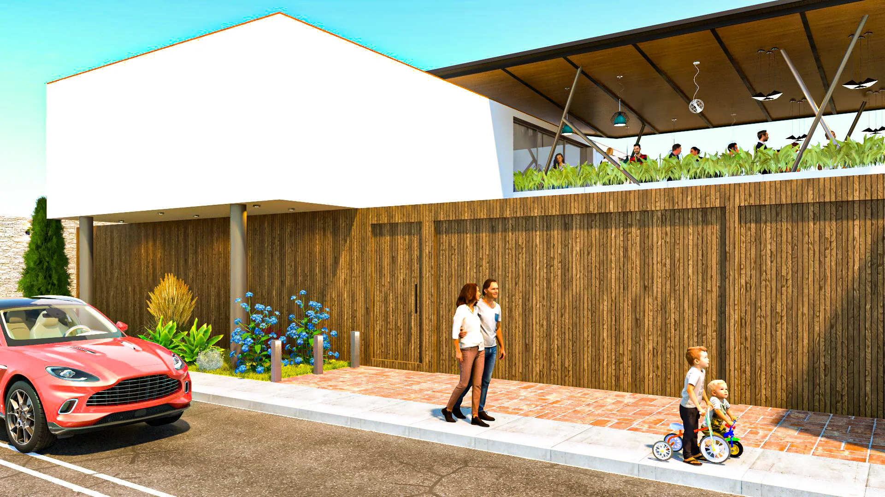
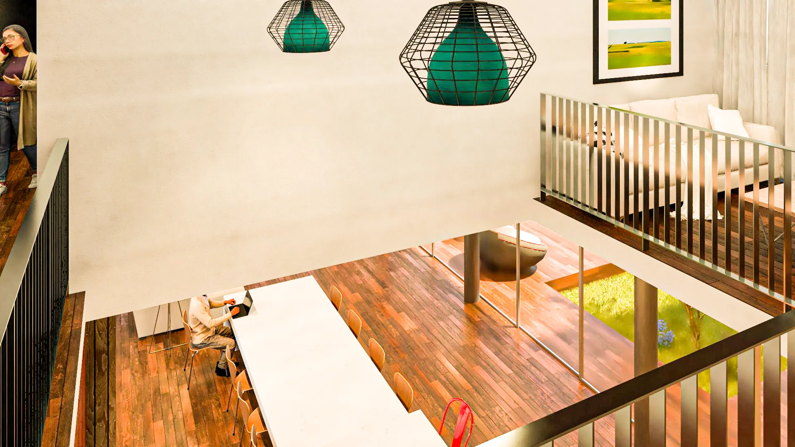

ARQUITECTURA · PERÚ
Espacios
bien pensados.
Soluciones que funcionan.
Diseñamos viviendas y transformamos ambientes para aprovechar mejor cada metro cuadrado, con una arquitectura que responde a tu día a día.

01 / PROYECTOS
ARQUITECTURA, RENDERS Y ESPACIOSArquitectura que
se puede habitar.
Cuatro propuestas. Distintas necesidades y una misma prioridad: que cada espacio funcione.
Diseñar no es
ocupar todo.
Soy el Arq. Luis Ángel García. Desarrollo propuestas arquitectónicas, planos, modelados y visualizaciones, priorizando la circulación, iluminación, ventilación, privacidad y aprovechamiento real de cada ambiente.
No siempre necesitas construir más. Una buena distribución puede dar amplitud a los espacios que ya tienes.
Conoce mi enfoque03 / SERVICIOS
DEL DISEÑO A LA OBRADel primer trazo
al espacio real.
Servicios organizados para que encuentres exactamente lo que necesitas, sin complicaciones.
Diseño de viviendas
Viviendas unifamiliares, casas de campo, casas de playa, piscinas y terrazas.
Consultar servicio ↗ 02Proyecto ejecutivo
Planos de arquitectura, estructuras, instalaciones sanitarias y eléctricas, acabados, carpintería, piscinas y detalles de obra.
Consultar servicio ↗ 03Visualización realista
Modelado 3D con SketchUp, renders V-Ray y presentación visual de espacios.
Consultar servicio ↗ 04Asesoría en obra
Orientación arquitectónica para materiales, acabados y desarrollo de ambientes.
Consultar servicio ↗
04 / SOLUCIONES FUNCIONALES
¿Tu espacio no funciona
como debería?
Después de una jornada de trabajo, una casa debe ofrecer comodidad, amplitud y tranquilidad. El diseño puede resolver recorridos innecesarios, falta de luz y ambientes mal aprovechados.
- Cocinas y dormitorios mejor distribuidos
- Circulaciones y áreas reducidas
- Mobiliario y almacenamiento a medida
- Remodelación y ampliación de espacios
05 / ASESORÍA ONLINE
Una idea puede empezar
con una conversación.
Envíame fotografías, medidas, planos o un croquis. Revisaremos la necesidad y definiremos el alcance antes de desarrollar una propuesta arquitectónica.
La asesoría inicial no sustituye una evaluación estructural o una visita técnica cuando sea necesaria.
Consultar por WhatsApp ↗06 / GESTIÓN TÉCNICA
Seguimiento de proyectos
e inversiones públicas.
Información técnica y presupuestal para conocer el estado de proyectos y obras.
07 / CONTACTO
Hagamos espacio
para tu proyecto.
Diseño de viviendas, optimización de ambientes y asesoría arquitectónica. Escríbeme y conversemos sobre tu idea.
Escribir por WhatsApp ↗